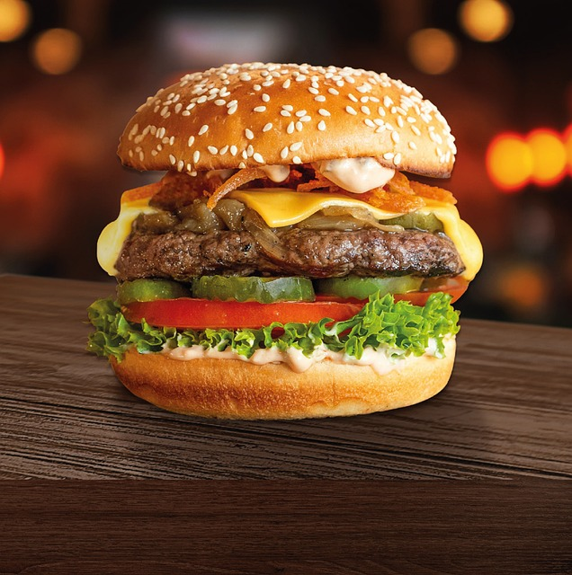

bb

Pepperoni Pizza Burger
-
1 1/2
pound ground beef
-
1/2
tsp italian seasoning
-
pepperoni slices
-
grated parmesan cheese
-
1/2
pound italian sausage
-
8
slices mozarella or provolene cheese
-
8
tbsp jarred marinara sauce
-
4
whole kaiser rolls or good hamburger buns